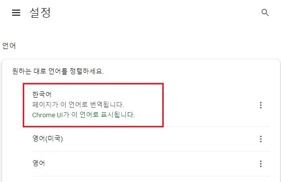
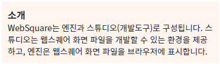
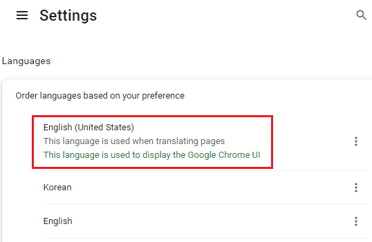
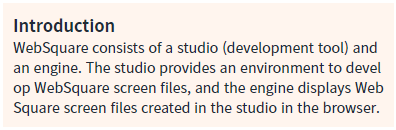
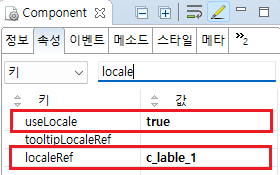

클라이언트 다국어 설정 중 'localeRef' 속성 예시입니다.
이 속성은 텍스트를 출력하는 컴포넌트 중 화면에 표시할 문자열을 하드 코딩해야 하는 경우에 사용됩니다.
localRef 속성이 있는 대표적인 컴포넌트는 Anchor, Span, Textbox, Trigger 입니다.클라이언트 다국어는 브라우저의 언어 설정에 따라 동작합니다.
브라우저의 언어 설정을 변경한 경우 브라우저를 전체 새로고침 해야 변경된 언어가 반영됩니다.
Textbox 컴포넌트에 localeRef 속성을 사용하여 브라우저 언어에 따라 한국어, 영어로 출력하기
이 예제는 브라우저의 언어 설정에 따라 출력되는 문자열이 다릅니다.
1
STEP 1: 브라우저의 언어 설정을 한국어로 설정합니다.
설정을 변경한 경우에는 브라우저를 전체 새로 고침을 해야 적용됩니다.
Image 1.브라우저(Chrome) 실행 예시 - 언어 설정

2
STEP 2: 출력된 문자열 확인하기
화면에 웹스퀘어 소개 문구가 한국어로 표시됩니다.
Image 2.브라우저(Chrome) 실행 예시

1
STEP 1: 브라우저의 언어 설정을 영어로 설정합니다.
설정을 변경한 경우에는 브라우저를 전체 새로 고침을 해야 적용됩니다.
Image 3.브라우저(Chrome) 실행 예시 - 언어 설정

2
STEP 2: 출력된 문자열 확인하기
화면에 웹스퀘어 소개 문구가 영어로 표시됩니다.
Image 4.브라우저(Chrome) 실행 예시

언어팩 JS 파일에 화면에서 사용할 키(Key)와 값(Value)을 정의합니다. 예제 프로젝트의 경우 한국어, 영어가 설정되어있으며 파일 위치는 아래와 같습니다.
한국어 : [예제 프로젝트]/WebContent/lang/ko.js
영어 : [예제 프로젝트]/WebContent/lang/en.js
Example 1.JSON
//한국어 - ko.js 예시 //화면에서 사용할 문자열을 등록합니다. //c_label_1, c_label_2 WebSquare.WebSquareLang = { "c_label_1" : "소개", "c_label_2" : "WebSquare는 스튜디오(개발도구)와 엔진으로 구성됩니다. 스튜디오는 웹스퀘어 화면 파일을 개발할 수 있는 환경을 제공하고, 엔진은 스튜디오에서 생성된 웹스퀘어 화면 파일을 브라우저에 표시합니다." };
Example 2.JSON
//영어 - en.js 예시 //화면에서 사용할 문자열을 등록합니다. //c_label_1, c_label_2 WebSquare.WebSquareLang = { "c_label_1" : "Introduction", "c_label_2" : "WebSquare consists of a studio (development tool) and an engine. The studio provides an environment to develop WebSquare screen files, and the engine displays WebSquare screen files created in the studio in the browser." }
[필수] useLocale="true" //[default : false, true] 클라이언트 다국어 설정의 사용 여부를 정의합니다.
[필수] localeRef="KEY" //언어팩에 정의한 KEY
예시 1) localeRef="c_label_1"
Image 5.웹스퀘어 스튜디오의 Component View 예시

Example 3.Source
<!-- 소스 본문 예시 --> <w2:textbox localeRef="c_label_1" useLocale="true" tagname="h3"></w2:textbox>
1. 정의한 키에 해당하는 값(Value)가 없는 경우 global_undefined가 출력됩니다.
2. 반드시 useLocale 속성이 "true"로 설정되어야 localRef 속성이 동작합니다.
예시) useLocale="true"
localeRef
useLocale